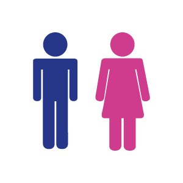
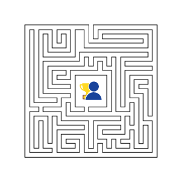
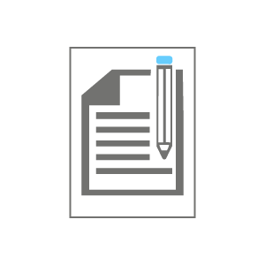

| Código | Objetivos de aprendizaje | Ejemplos | Ilustración |
|---|---|---|---|
| 1 | Philipps 66 | En esta técnica un grupo grande se divide en subgrupos de seis personas, para discutir durante seis minutos un tema y llegar a una conclusión. De los informes de todos los grupos se extrae la conclusión general. Puede ser muy útil como técnica para rescatar y movilizar los conocimientos previos que puedan tener acerca de un tema. | |
| 2 | Juego de roles | Dos o más personas representan una situación real, asumiendo los roles del caso, con la finalidad de que pueda ser mejor comprendida por el grupo |  |
| 3 | Foro | El grupo expresa libre e informalmente sus ideas y opiniones sobre un asunto, moderados por el docente. | |
| 4 | Interrogatorio | Es una técnica que, con base en cuestionamientos, permite obtener información de los alumnos sobre conceptos, procedimientos, habilidades cognitivas, sentimientos o experiencias en relación a una temática. Es muy útil cuando se comienza a ver un nuevo tema. | |
| 5 | Estudio de caso | Se describe una situación real o ficticia, tras lo cual se plantea un problema sobre el que los estudiantes debe proponer una solución. |  |
| 6 | Exposición | Se trata de una técnica en la que un estudiante o un experto invitado realizan una exposición oral ante un grupo. |  |